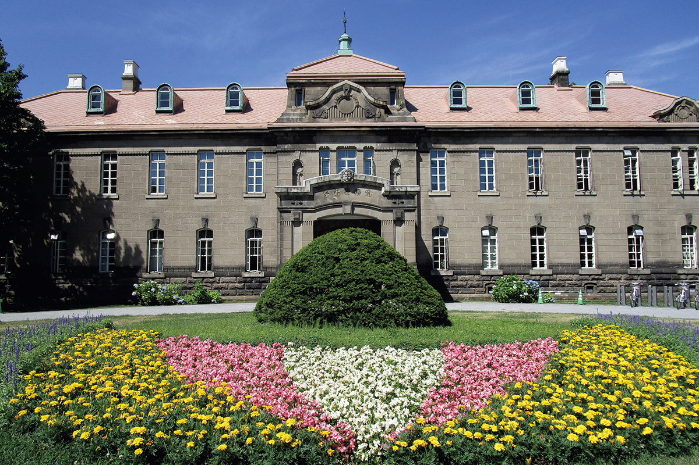
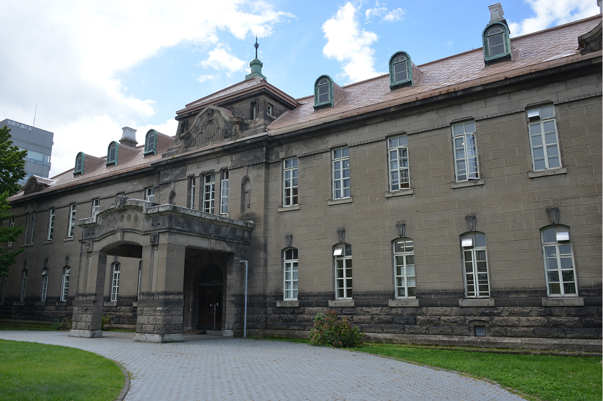
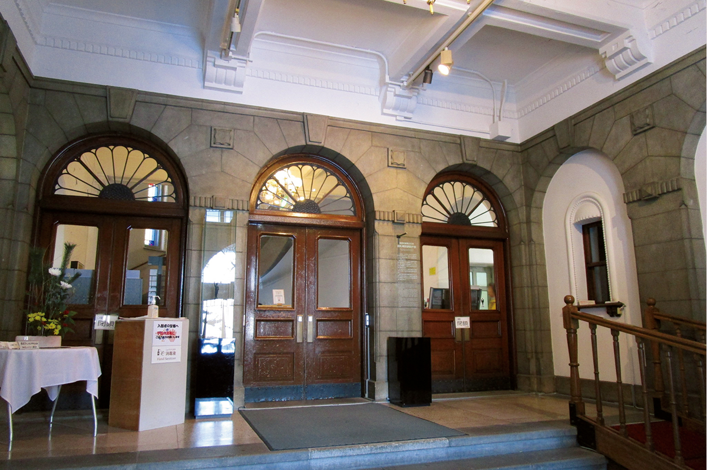
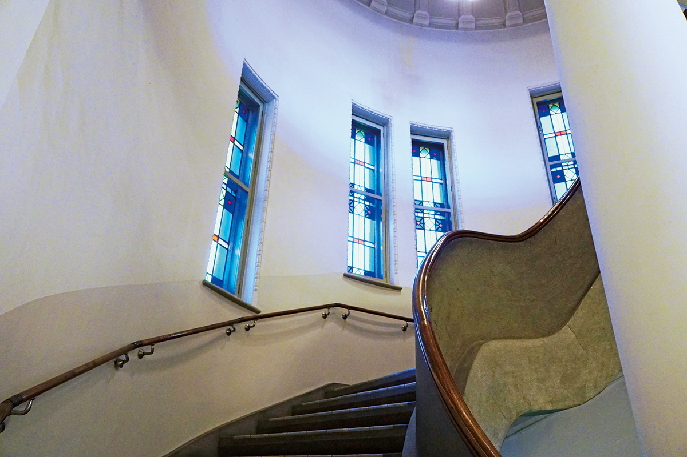
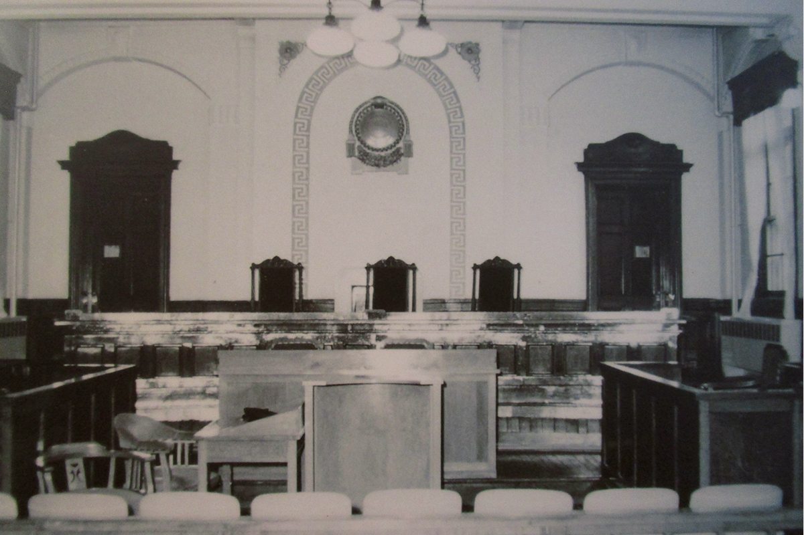
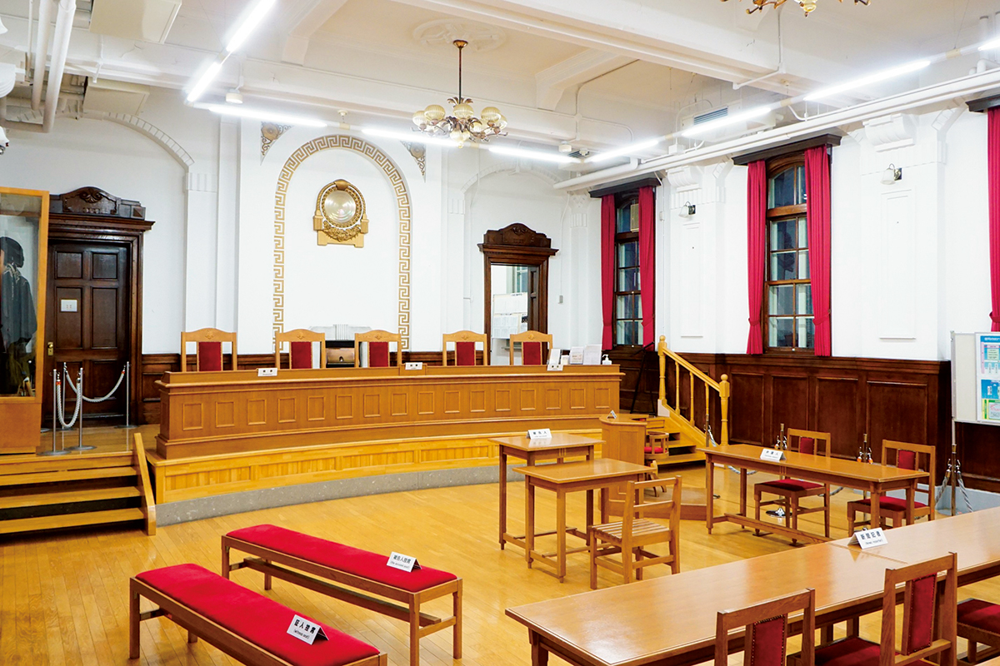

Префектура Хоккайдо · Саппоро · архитектура
Сирёкан в Саппоро: бывший апелляционный суд из вулканического камня в конце парка Одори

Длинный парк Одори, где каждую зиму проходит Снежный фестиваль Саппоро, на западе упирается в строгое симметричное здание из серого камня. В 1926 году его построили для апелляционного суда, а с 1973 года здесь городской музей, куда можно зайти бесплатно.
Камень
Симметрия из саппорского мягкого камня
Сирёкан, городской музей Саппоро, стоит у западного края парка Одори, который тянется через центр города. Здесь парк заканчивается, и здание как будто принимает его на себя: симметричный фасад с выступом посередине стоит точно поперёк зелёной полосы. Его построили в 1926 году для Апелляционного суда Саппоро, и с тех пор оно так и замыкает перспективу.
Подойдите к стене поближе, и первым делом заметите цвет. В целом стена спокойного серого цвета, но местами в него подмешан голубоватый или красноватый оттенок, а если присмотреться, на поверхности проступают белые крапинки. Стена неоднородна, потому что сложена из саппорского мягкого камня «саппоро нансэки». Его добывают в пределах города, а родился он около 40 000 лет назад, когда при извержении вулкана Сикоцу пирокластический поток застыл в камень.

С эпохи Мэйдзи до начала эпохи Сёва из этого камня строили много в Саппоро и соседнем Отару. Он легко поддаётся обработке, не горит и хорошо держит тепло, поэтому его выбирали для города с холодными зимами. Бывший суд входит в число самых больших сохранившихся зданий из саппорского камня, и каменная облицовка придаёт ему ощутимую массивность.
Над крытым подъездом в центре фасада стоит богиня правосудия с завязанными глазами, с весами и мечом в руках. Под ней высечено название «Апелляционный суд Саппоро»: пять иероглифов читаются справа налево, и каждый вписан в свой круг. Эта лёгкая, почти плакатная графика напоминает о дизайне эпохи Тайсё.
Интерьер
Модерн эпохи Тайсё
Дух 1920-х годов чувствуется и внутри. Сразу за входом посетителя встречает арка, в которой оставлена фактура камня и добавлен геометрический орнамент. Дальше, словно для того, чтобы напомнить о достоинстве суда, стоят две колонны в древнеримском духе, а за ними лестница на второй этаж. На её повороте устроен витраж, и его рисунок тоже собран из прямых линий и геометрических фигур. Цветов в нём немного, и от этого пространство получает ясный ритм.


Музей
Из зала суда в музей
В 1973 году суд переехал, и здание стало городским музеем Саппоро. В нём рассказывают о зимних Олимпийских играх 1972 года в Саппоро и о литературе, связанной с городом. В 2006 году здесь восстановили зал уголовного суда в том виде, какой он имел при апелляционном суде, и открыли его для посетителей.
Зал уголовного суда находится в правом крыле. Симметричное ему помещение в левом крыле занимает мемориальная комната Хироси Обы (1921–1988), художника и мастера манги из Саппоро. Кроме постоянной экспозиции о прошлом города в здании работают галереи и залы, которые можно арендовать.


Сюда приходят посмотреть экспозицию, на мероприятия или ради самого здания, и все эти пути пересекаются в одном доме. Бывший суд, который словно присматривает за парком Одори, родился из встречи местного камня и новых для своего времени государственных институтов. Прогулка по парку, неторопливый взгляд на фасад и залы, час в экспозиции, и становится понятнее, какие общественные места были нужны городу в эпоху модернизации и куда он движется дальше.
В 2020 году здание признали важным культурным достоянием Японии как ценный по замыслу и конструкции образец постройки из саппорского камня. Проектировал его архитектор из финансового отдела Министерства юстиции. Стены сложены из кирпича и мягкого камня, а пол второго этажа сделан из железобетона: в одном здании соединились старые и новые для того времени строительные приёмы.
Тем, кому понравится саппорский камень, стоит доехать и до района Исияма на юге города: там бывшее почтовое отделение из того же камня превратили в кафе и магазин «Посутокан».
«Сирёкан», городской музей Саппоро
- Адрес
- префектура Хоккайдо, Саппоро, район Тюо, Одори-Ниси, 13
- Телефон
- +81 11-251-0731
- Часы работы
- 9:00–19:00
- Выходные
- понедельник (если это праздник, то следующий будний день), новогодние праздники
- Цены / Вход
- бесплатно
- Сайт
- s-shiryokan.jp